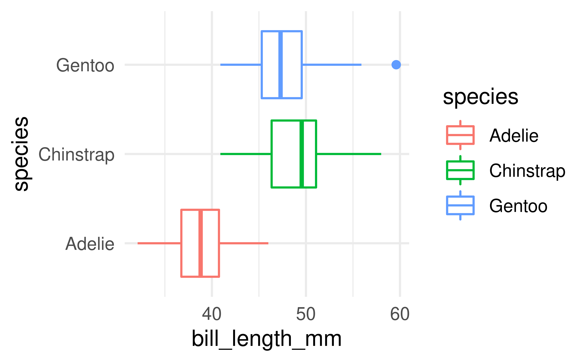

Presentation title
Presentation subtitle (if any)
Team name
Names of team members
University of Edinburgh
2021-10-19
A statement of the overall goal / research question
Section title
Hello World
Click the
Knitbutton to compile your presentationMake sure to commit and push all resulting files to your GitHub repo
Using reveal.js
It’s possible to have a horizontal sliding transition as well as nest multiple slides to create a vertical stack.
When presenting, you use the left/right arrows to step through the top-level (horizontal) slides. When you arrive at a vertical stack you can optionally press the up/down arrows to view the vertical slides or skip past them by pressing the right arrow.
(click the down key now)
reveal.js
The presentation is created using the
reveal.jspackageYou can create a slide show broken up into sections by using the # and ## heading tags
You can also create a new slide without a header using a horizontal rule (—-)
- You can also add pauses between content on a slide using (“. . .”)
Like this.
…or using “::: fragment”
Like this.
Layouts
You can use plain text
- or bullet points
because you can combine HTML and Markdown syntax.
*You can also add footnotes
Code
## # A tibble: 2 × 5
## term estimate std.error statistic p.value
## <chr> <dbl> <dbl> <dbl> <dbl>
## 1 (Intercept) -17.6 6.76 -2.60 1.23e- 2
## 2 speed 3.93 0.416 9.46 1.49e-12## # A tibble: 1 × 12
## r.squared adj.r.squared sigma statistic p.value df logLik AIC BIC
## <dbl> <dbl> <dbl> <dbl> <dbl> <dbl> <dbl> <dbl> <dbl>
## 1 0.651 0.644 15.4 89.6 1.49e-12 1 -207. 419. 425.
## # … with 3 more variables: deviance <dbl>, df.residual <int>, nobs <int>Plots

Plot and text
- Some text
- goes here

Different widths
- Some text
- goes here

Tables
If you want to generate a table, make sure it is in the HTML format (instead of Markdown or other formats), e.g.,
| Sepal.Length | Sepal.Width | Petal.Length | Petal.Width | Species |
|---|---|---|---|---|
| 5.1 | 3.5 | 1.4 | 0.2 | setosa |
| 4.9 | 3.0 | 1.4 | 0.2 | setosa |
| 4.7 | 3.2 | 1.3 | 0.2 | setosa |
| 4.6 | 3.1 | 1.5 | 0.2 | setosa |
| 5.0 | 3.6 | 1.4 | 0.2 | setosa |
| 5.4 | 3.9 | 1.7 | 0.4 | setosa |
Images

Or you can also include a full page image. See next slide.
Math Expressions
You can write LaTeX math expressions inside a pair of dollar signs ($…$), e.g. \(\alpha+\beta\). You can use the display style with double dollar signs:
\[\bar{X}=\frac{1}{n}\sum_{i=1}^nX_i\]
Feeling adventurous?
You can learn more about the options available at the following pages: